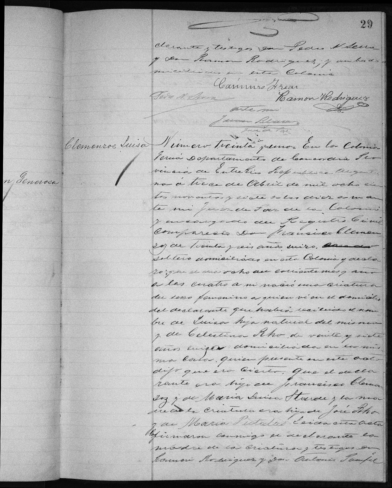
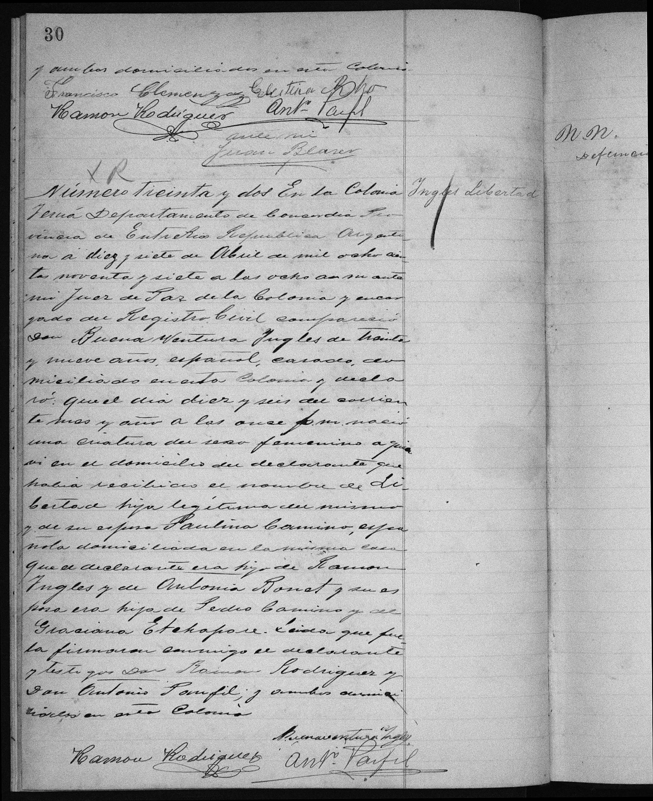
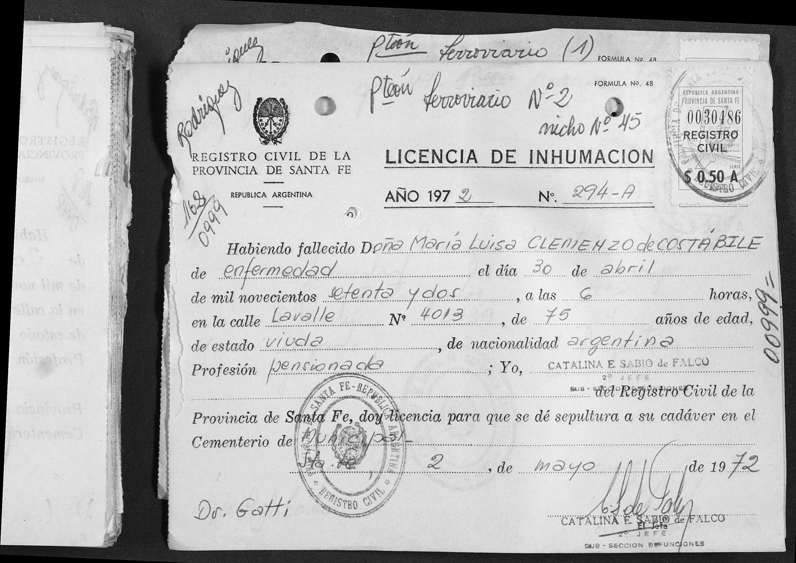
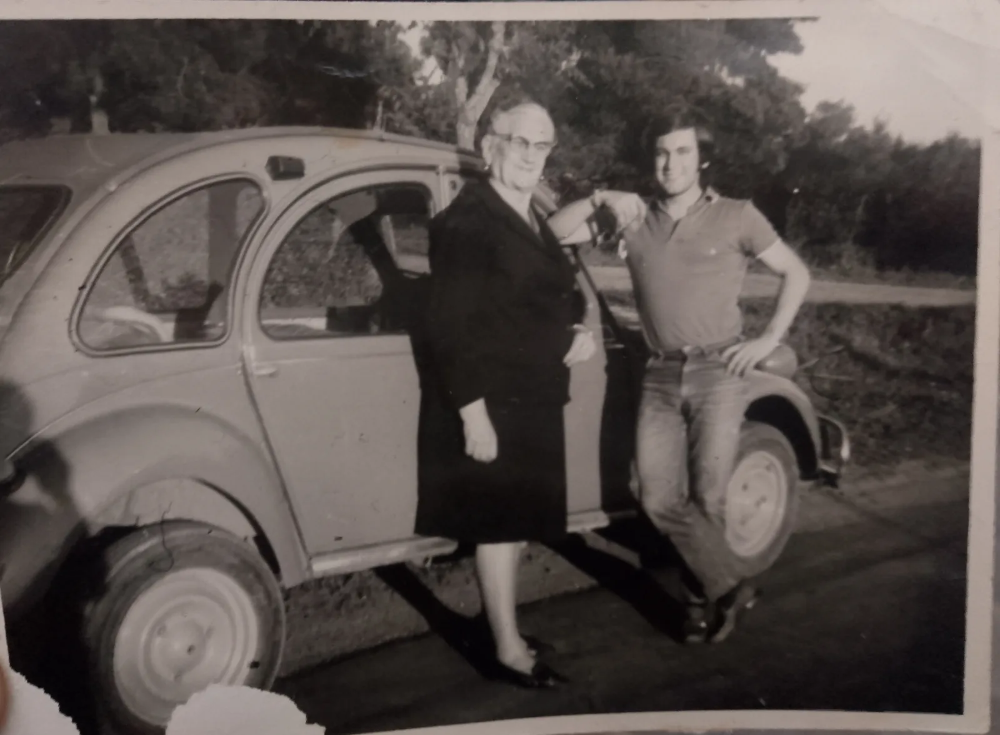
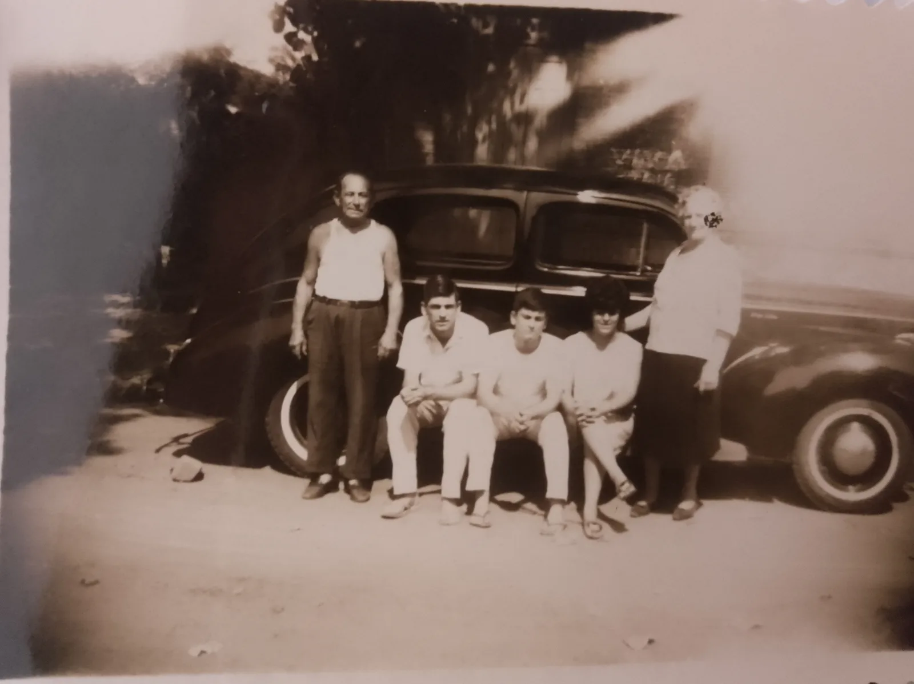
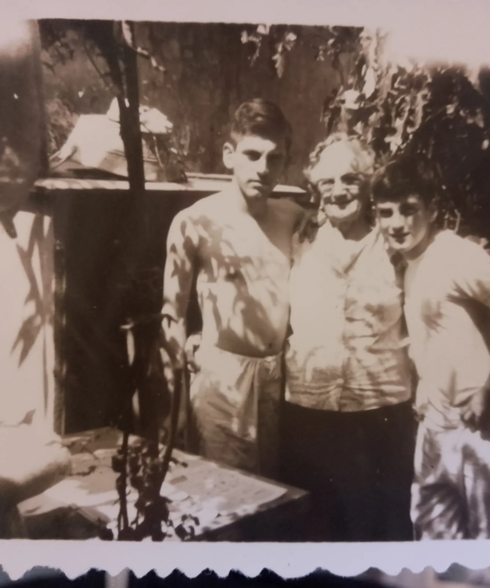
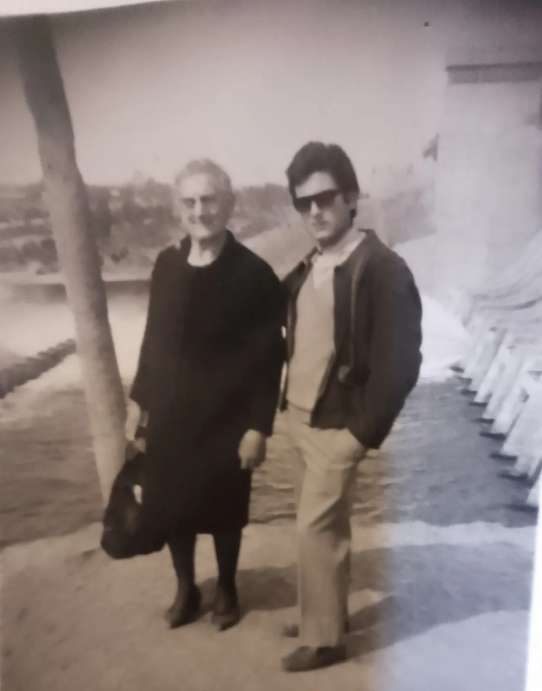

La historia
Luisa —el «María» no figura en su acta de nacimiento— nació en Colonia Yeruá, departamento Concordia, Entre Ríos, el 8 de abril de 1897. Su nacimiento marca una etapa migratoria intermedia de la familia que no conocíamos: entre el Colón del censo de 1895 y el Santa Fe de ~1905, sus padres François Clemenzo y María Celestina Roh pasaron por Yeruá.
El acta civil N.º 31 (Juez de Paz Juan Blaser, declarada el 13 de abril de 1897) es uno de los documentos más ricos de la generación argentina:
Al pie firman los dos: «Francisco Clemenzoz» —la misma grafía de la rama santafesina de Esteban, usada por el propio Francisco en 1897, un dato más para [[el-mito-clemenceau]]— y «Celestina Rho», alfabetizada como ya decía el censo. Las edades declaradas (él 36, ella 27) vuelven a derivar: la de Celestina daría nacimiento ~1870, incompatible con sus otros registros.
Luisa casó con Agustín Costabile —argentino de familia italiana, según el bautismo de su hija— antes de noviembre de 1917: Teresa Lidia (Teresa Lidia Costabile) nació ese mes y fue bautizada «hija legítima». Murió viuda el 30 de abril de 1972, a los 75 años exactos, en su casa de calle Lavalle 4013, Santa Fe; fue sepultada el 2 de mayo en el Cementerio Municipal, Panteón Ferroviario N.º 2, nicho 45 — lo que sugiere que Agustín fue empleado del ferrocarril.
Cronología
| Año | Fuente | Qué dice |
|---|---|---|
| 1897-04-08 | Acta de nacimiento civil N.º 31, Colonia Yeruá (Concordia, E.R.) | Nace a las 4 a.m.; declarada el 13 de abril por su padre, «Francisco Clemenzoz, 36, suizo, soltero»; «hija natural» de él y de «Celestina Rho, 27, suiza»; abuelos: Francisco Clemenzoz × María Luisa Starde; José Rho × María Putalaz; firman ambos padres |
| antes de 1917-11 | Bautismo de Teresa Lidia Costabile («hija legítima») | Ya está casada con Agustín Costabile — acta aún no hallada |
| 1917-11-20 | Bautismo de Teresa Lidia Costabile (Santa Fe, 1918) | Nace su hija Teresa Lidia Costabile (Teresa Lidia Costabile); la familia «domiciliados en esta Ciudad» |
| 1943-09-22 | Nota marginal del bautismo de Teresa Lidia Costabile | Su hija Teresa casa con Ángel Carmelo Magallanes — el puente documentado a la rama Magallanes de Chubut |
| 1972-04-30 | Licencia de inhumación N.º 294-A, Registro Civil de Santa Fe | Muere «María Luisa Clemenzo de Costábile», 75 años, viuda, pensionada, de enfermedad, en Lavalle 4013, Santa Fe; sepultada el 2-5 en el Cementerio Municipal, Panteón Ferroviario N.º 2, nicho 45 |
Qué falta / hipótesis
Líneas de investigación
- Buscar el acta de matrimonio Clemenzo × Costabile (antes de nov-1917, ¿Santa Fe?)
- Confirmar con Lucía Magallanes su posición exacta en la línea (¿Teresa Lidia Teresa Lidia Costabile era su abuela?) — la conexión Costabile→Magallanes ya está documentada
- Buscar a Agustín Costabile en registros de personal ferroviario de Santa Fe (el nicho en el Panteón Ferroviario lo sugiere empleado)
- Buscar la defunción de Agustín Costabile (ella ya era viuda en 1972)
- Buscar el acta de matrimonio civil de François Clemenzo × María Celestina Roh en el Registro Civil de Concordia / Colonia Yeruá, ventana 1897–1900 (el «soltero» de 1897 y la «hija civil» de Carlota Julia Clemenzo en 1900 la cierran)
Fuentes
- Acta de nacimiento civil N.º 31, Registro Civil de Colonia Yeruá, dpto. Concordia, Entre Ríos, 13-04-1897 (2 imágenes en su ficha; la pág. 30 incluye las firmas y el acta N.º 32 que prueba el mes)
- Licencia de inhumación N.º 294-A, Registro Civil de la Provincia de Santa Fe, 2-05-1972 (imagen en su ficha)
Documentos



Fotos



